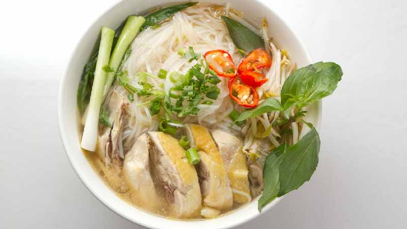
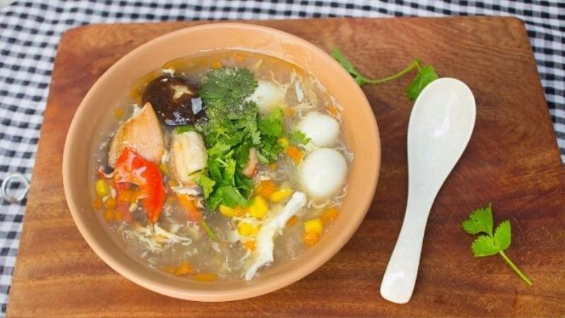
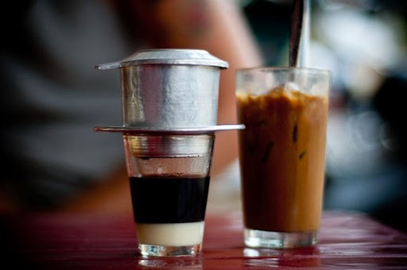

Vietnamese Cuisine
Vietnamese cuisine is a vibrant tapestry of flavors and textures, a testament to the country's rich history and diverse geography. It's a cuisine that emphasizes achieving a balance of the five fundamental tastes (ngũ vị) - sweet, salty, sour, spicy, and bitter. This harmony creates a complex and satisfying eating experience.
Southern Vietnamese cuisine takes the concept of balance to a new level. Influenced by its neighbors, Thailand and Cambodia, it boasts bolder flavors with a pronounced sweetness and a hint of fiery spice. Coconut milk adds creaminess to broths and curries, while chilies offer a welcome kick. Fresh herbs like Thai lime leaves and lemongrass add a citrus aroma, while palm sugar balances the savory and spicy elements.
Even classic Vietnamese dishes like Chicken Pho take on a slightly sweeter character in the south. Silky rice noodles and tender shredded chicken nestle in the steaming bowl, waiting to be adorned with fresh herbs and a squeeze of lime. It's a light yet satisfying meal, perfect for any time of day, especially during cold or rainy days.

Southern Vietnam's crab soup is a celebration of the sea. Rich, flavorful broth, infused with aromatics, bursts with the sweet and savory taste of fresh crab meat. Unlike its tomato-based cousin from the north, this version often features a touch of coconut milk for creaminess. A quick simmer ensures the crab retains its delicate texture, making each spoonful a delightful encounter with the ocean's bounty.

Vietnamese coffee is an experience for the senses. Strong, dark brew slowly drips through a phin filter, creating a concentrated and intensely flavorful coffee. The addition of creamy, sweetened condensed milk balances the coffee's bitterness, resulting in a sweet and satisfying drink. Served hot or iced, Vietnamese coffee is a must-try for any coffee lover, offering a unique and unforgettable taste sensation
